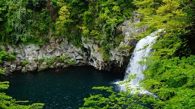
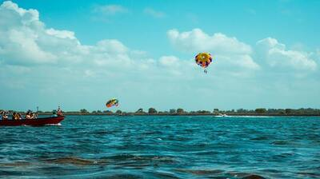

몸과 마음이 치유되는 섬

- 쉼(healing)의 공간으로 안내합니다.
- 탁 트인 바다, 시원한 바다에 몸을 마기고 뚜벅뚜벅 오름을 오르고 올렛길을 걷다보면 온전히 나에게 집중할 수 있습니다.
- 상세 일정
- 여행 기간 : 2박 3일
- 여행 일정 : 여행 일정은 상담을 통해 결정 및 조정 가능합니다.
다양한 액티비티가 기다리는 섬

- 모험과 스릴이 넘치는 레저의 천국으로 안내합니다.
- 둘러보기만 하는 여행을 하셨나요?
- 하늘을 날며 시원한 바다를 내려다보는 패러글라이등과 투명한 물빛 속을 여행하는 스킨스쿠버... 아름다운 제주 해안도로를 씽씽 전동바이크나 전동킥보드로 달려보세요. 시원한 바다를 가까이에서 느낄 수 있는 요트 체험과 배낚시도 빼놓을 수 없겠죠?